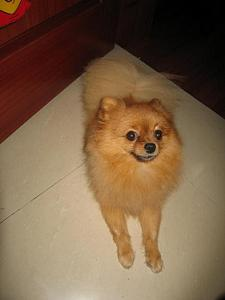
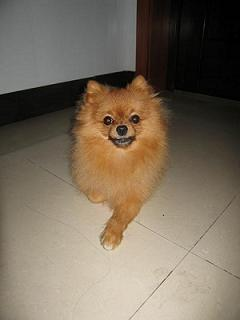
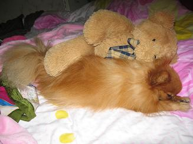
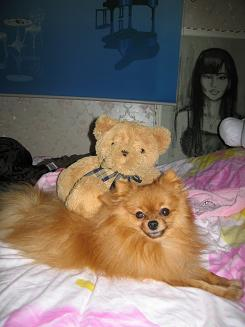
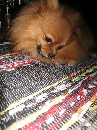
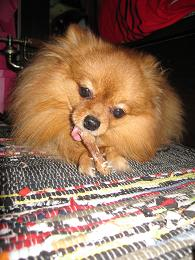
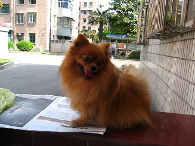
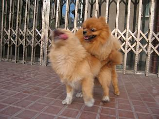
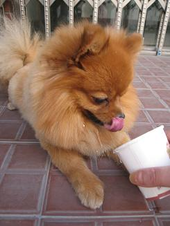

先祝大家国庆节快乐!
已经是假期的第5天了,记得小时候每年国庆都会吵着闹着要去逛外滩要看灯,而且一定要穿新衣服来迎接国庆,不知为何今年一点也不兴奋,10月1日那天晚上如果不是开车经过外滩封路,差点忘了现在已是国庆节.昨天如果不是独自去淮海路散步,发现全是人,差点又要忘记了现在已是国庆.人类真幸福啊,从幸福声中突然听到了求助的声音,很惨,很绝望...我回过头去找到了这个声音,是一个男人手里抓了一只正在挣扎地鸡...我顿时胸很闷,好像那只鸡就是在叫我，在向我求救一样,我心里真的好难过好难过,因为周围居然没有一个人同情这只鸡,每个人都照样谈笑风声...我看着那只鸡即将结束生命的鸡,挣扎了十几秒,结果我还是自己走了,没有救它...我很不开心,觉得自己很没用,真的很讨厌自己,为什么见死不救呢...不敢说自己再也不吃鸡肉,但是尽量少吃吧...主要是希望大家可以多多保护和爱护小动物,还有在这里诅咒那些虐待小动物的人们,希望他们.!@$$#^%^!@$$#%^^&*&(()@#唉,想到了就很无奈,有的时候人真的不如动物哦...动物万岁!!!!
我最最最爱爱爱的DONGDONG
DONGDONG SHOW








